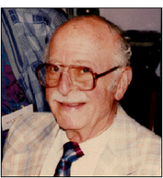

Please note: the AAS Obituaries are temporarily being hosted on this website while their full content is being ingested into the PubPub publishing platform newly adopted by the Bulletin of the American Astronomical Society. When the migration is complete, your existing links will take you to the final, migrated content. Contact peter.williams@aas.org with any questions.
Maurice M. Shapiro (1915-2008)
Maurice Shapiro was an outstanding scientist and educator whose contributions spanned a range of fields: He was the leader of the "Water Effects" group (study of underwater explosions) within the Los Alamos Ordnance Division in the Manhattan project during World War II; he witnessed the Trinity test and there "shared a blanket with Hans Bethe." Shapiro understood the nature of the new weapons and helped to form the Association of Los Alamos Scientists [ALAS] to lobby for a civilian atomic-energy commission. (He was chair of ALAS in 1946.) He also worked at Oak Ridge on design of a power reactor just after the war (similar to those used in naval vessels). In 1949 Shapiro joined the Naval Research Laboratory's nuclear physics division, where he started a new program in high-energy physics and cosmic rays, his primary interest throughout his life. In 1977, he founded the International School of Cosmic-Ray Astrophysics in Erice, Italy, where many outstanding scientists in the field were students at early stages of their career. He served as director of this school until his death. Shapiro was interested in understanding the origin, acceleration, and propagation of cosmic rays and the role of high energy neutrinos and their detection. He played a major role in starting the field of high-energy neutrino astronomy.
Maury, son of J. Simon Werner and Miriam Rivka, was born in Jerusalem on 13 November 1915. His father never returned home from World War I, and his mother married Rabbi Osher Shapiro two years later. The family migrated to Chicago, Illinois, during the early 1920s. Maury's given name was Moishe Mendel Werner. The only father he knew was Rabbi Shapiro, hence the origin of the name we know him by.
His parents had planned a theological career for him; however, Maury opted for the study of Physics at the University of Chicago. He did his Ph.D. with Arthur Compton (1942) using early emulsions exposed at Mount Evans--both emulsions on glass plates and stripped emulsions--to study cosmic-ray induced stars. Maury wrote definitive reviews on the emulsion technique (use of high-density visual detectors) in 1941 in Reviews of Modern Physics and then an article entitled "Nuclear Emulsions" in the Handbuch der Physik of 1958. He did many experimental investigations related to cosmic rays and particle properties after the war when he joined NRL.
Using emulsion-chamber techniques and high-altitude exposures, Maury measured and verified saturation of relativistic rise in ionization, a measurement of helium and proton flux at high rigidity, and accurate measurements of secondary-to-primary ratio (Li, Be, B/CNO); with his colleagues he did one of the best measurements of neutral pion life time. He also did important measurements of properties of heavy baryons.
My association with Maury started when I joined University of Maryland's High Energy group in 1961, a time when Maury had a very active group working in particle physics and cosmic rays using nuclear emulsions and was starting a bubble-chamber group. (Some of the members were Bernard Hildebrand, Bert Stiller, Rein Silberberg, C. H. Tsao, and Robert Glasser.) There was active interaction between George Snow (University of Maryland) and the NRL group, both studying properties of high-energy particles with nuclear emulsions and bubble chambers. I was a consultant with the NRL group for some ten years.
In 1960s, Maury investigated the ramifications and limitations of supernova theories for the origin of cosmic rays and discussed the production of high-energy neutrinos and gamma rays from these sources. He was one of the active members of the DUMAND project to study high-energy neutrinos. With Rein Silberberg he explored the capabilities of such a project.
Maury's group made seminal contributions on quantitatively exploring isotope ratios (using isotopes to determine the time lag between explosion and acceleration in supernova sources--to suggest the importance of FIP in injection), the detailed analysis of the so- called Slab-model, and re-acceleration of cosmic rays (Shapiro, Silberberg, and Tsao in Cosmology, Fusion and other Matters, edited by Fred Reines, 1972).
When he became emeritus, Maury was still very active both in research and in running the Erice School of Cosmic Ray Astrophysics (after 1982). He was interested in having a base of operations for the school. He approached me asking whether Maryland would be a possibility. I was delighted and suggested a Visiting professorship to be able to continue his work (without having to move out of the Washington, DC, area). Thus started Maury's association with Maryland which continued until his death.
Maury was not only an outstanding scientist, but he was a true gentleman and a good friend. He was an ambassador for the field of Cosmic Rays. His friendly personality, always warm and kind to students and colleagues, was quite infectious. Maury contributed to both experimental and theoretical investigations of cosmic rays and their central role in connecting many diverse disciplines in particle physics, astrophysics, geophysics, acoustical physics. He was outstanding scientist and was greatly concerned about world peace and human affairs.
Maury passed away on 27 February 2008, at the age of 92, in Alexandria, Virginia. Four years prior to his death he was still swimming in the Mediterranean during the Cosmic Ray School sessions at Erice. He is survived by his wife, Ruth Auslander, and children Joel N. Shapiro, Elana Ashley, Raquel T. Kislinger, Mark and Bonnie Auslander, Beth Kessler, Lionel Ames, and Naomi Mirvis and grand children.
Obituary written by: Gaurang B. Yodh
BAAS Citation: BAAS, 2009, 41, 577
SAO/NASA ADS Bibcode: 2009BAAS...41..577Y